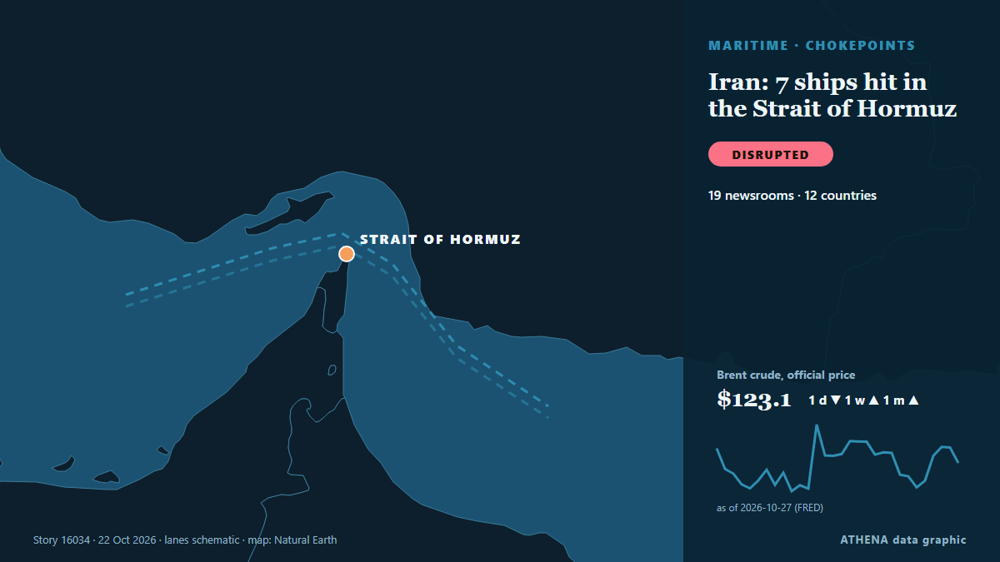

Iran: 7 ships hit in the Strait of Hormuz

Iran said on Thursday its navy hit seven oil tankers traveling through the Strait of Hormuz, threatening to exacerbate regional tensions and the global energy crisis that is driving inflation. من The Hill
نشرته بشكل مستقل 19 مصدرًا في 12 دولة منذ 20 أكتوبر، وأول من نشره Euronews English؛ والتغطية تتراجع. يقدّر ATHENA الخطر بأنه معتدل (3.1/10)، ويعود ذلك أساسًا إلى خطورة الضرر الموصوف ونطاقه الجغرافي والقطاعي. الثقة 89٪ (مرتفعة)، وعدد المصادر المستقلة المؤكِّدة: 19، بمتوسط موثوقية للمصادر يبلغ 78٪. وسائل الإعلام حسب البلد: الولايات المتحدة (3), باكستان (2), المملكة العربية السعودية (2). التغطية: من 20 أكتوبر إلى 22 أكتوبر، 49 ساعة.
لماذا يهم: يربط مضيق هرمز الخليج العربي بالمحيط المفتوح، ويمر عبره نحو خُمس النفط المستهلك في العالم؛ لذا تحرّك الهجمات على السفن أو التهديدات بإغلاقه أسعار الطاقة وأقساط التأمين خلال ساعات.
ما الذي تغيّر: 18 تقارير جديدة من 18 غرف أخبار خلال 24 ساعة حتى 22 أكتوبر.
تُعرض العناوين بالإنجليزية كما نُشرت.
نظرة سريعة
اختير وقُيِّم وكُتب وفق منهجية ATHENA المنشورة. لا يتدخل أي محرر في الأحداث بعينها. كيف يُنتَج ›
| 20 Oct 16:34 UTC | 1 |
|---|---|
| 20 Oct 18:34 UTC | 0 |
| 20 Oct 20:34 UTC | 0 |
| 20 Oct 22:34 UTC | 0 |
| 21 Oct 00:34 UTC | 0 |
| 21 Oct 02:34 UTC | 0 |
| 21 Oct 04:34 UTC | 0 |
| 21 Oct 06:34 UTC | 0 |
| 21 Oct 08:34 UTC | 0 |
| 21 Oct 10:34 UTC | 0 |
| 21 Oct 12:34 UTC | 0 |
| 21 Oct 14:34 UTC | 0 |
| 21 Oct 16:34 UTC | 0 |
| 21 Oct 18:34 UTC | 0 |
| 21 Oct 20:34 UTC | 0 |
| 21 Oct 22:34 UTC | 1 |
| 22 Oct 00:34 UTC | 0 |
| 22 Oct 02:34 UTC | 0 |
| 22 Oct 04:34 UTC | 8 |
| 22 Oct 06:34 UTC | 3 |
| 22 Oct 08:34 UTC | 3 |
| 22 Oct 10:34 UTC | 1 |
| 22 Oct 12:34 UTC | 0 |
| 22 Oct 14:34 UTC | 0 |
| 22 Oct 16:34 UTC | 2 |
لماذا هذه الأرقام
الأهمية
الخطر
الثقة
التغطية — من نشر الخبر ومتى
العنوان كما نُشر · يفتح الأصل- Euronews English · فرنساIRGC mines set tankers ablaze as Tehran threatens expanded attacks
- Express Tribune · باكستانTrump says US ‘may do it a little bit further’ in Iran
- Arab News · المملكة العربية السعوديةIran’s Navy says seven vessels hit, warns US of wider response
- Middle East Eye · INTIran's IRGC Navy says seven vessels hit over past day
- Asharq Al-Awsat (English) · المملكة العربية السعوديةIran's IRGC Navy Says Seven Vessels Hit, Warns US of Wider Response
- Mehr News (English) · إيران4 vessels hit by IRGC, 3 others hit mine in Strait of Hormuz
- Haaretz (English) · إسرائيلIran says it struck four vessels in Gulf, warns U.S. of broader response
- Al-Monitor · الولايات المتحدةIran's IRGC Navy says seven vessels hit, warns US of wider response
- Business Recorder · باكستانIran's IRGC Navy says seven vessels hit, warns US of wider response
- TASS (English) · روسياIran’s IRGC says it attacked four vessels in Persian Gulf
- AzerNews · أذربيجانIran's IRGC claims four ships hit in Northern Persian Gulf amid US tensions
- APA (English) · أذربيجانIRGC says four vessels carrying oil hit mines near Hormuz, warns US of wider responses
- IRNA (English) · إيرانIRGC Navy says four oil-carrying ships hit in Persian Gulf
- Khaama Press · أفغانستانIran Says Seven Vessels Hit Near Strait of Hormuz, Warns US of wider response
- Xinhua (English) — page reader · الصينIran's IRGC says 7 "violating" vessels caught fire in waters around Hormuz Strait
- OilPrice.com · المملكة المتحدةIran Claims Seven Ships Hit in Persian Gulf as Oil Prices Surge
- The Hill · الولايات المتحدةIran: 7 ships hit in the Strait of Hormuz
- gCaptain · الولايات المتحدةIran Claims More Ships Struck Near Hormuz as Trump Accuses Tehran of ‘Faking Hits’
- Al Jazeera English · قطرIran says seven ships hit in Hormuz Strait, warns US of wider response